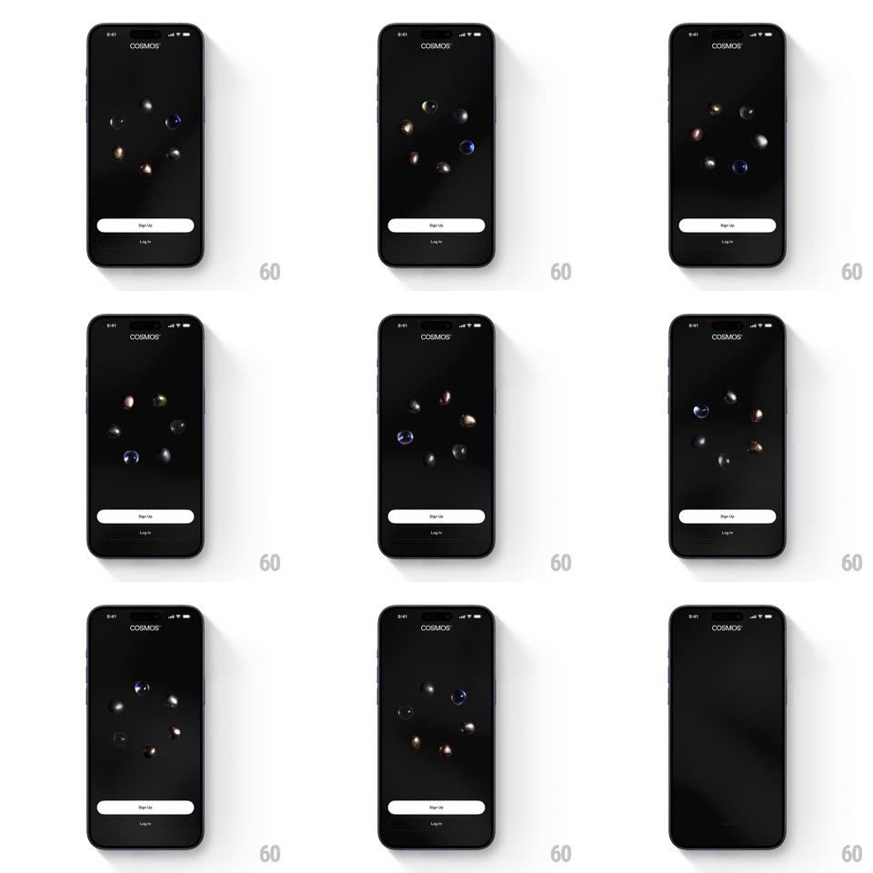

Media
Frame-by-frame

Rebuild this animation 1:1: Cosmos' intro - a ring of textured 3D pebbles rotates slowly on a black screen above the COSMOS wordmark and Sign Up / Log In buttons.

Rebuild this animation 1:1: Cosmos' intro - a ring of textured 3D pebbles rotates slowly on a black screen above the COSMOS wordmark and Sign Up / Log In buttons. ## Integration Integration: stack-agnostic spec - springs given as stiffness/damping, timed motions as duration + curve; map every value to your framework and animation library of choice. ## Scene Cosmos onboarding, pure black: "COSMOS" letterspaced at top; center stage a loose ring of ~8 small spheres - planet-like pebbles with stone, metallic, and glass textures (blues, golds, greys); bottom a white "Sign Up" pill and a "Log In" text link. ## Motion spec Pattern: continuous rotating ring of 3D pebbles. - The ring rotates around the vertical axis at a constant ~12s per revolution (linear) - pebbles at the front are larger and brighter, pebbles at the back shrink and dim (scale 0.6, opacity 0.5) with true z-ordering. - Each pebble also self-rotates slowly (own axis, 8-20s per turn, varied per pebble) so textures catch the light differently. - Pebbles bob individually on the ring (translateY +/-6px, 3-5s sine, phases spread evenly) - the ring breathes rather than marching. - On screen entry the ring fades in and scales from 0.8 -> 1 (600ms ease-out), then the loop runs indefinitely. - A soft radial vignette behind the ring brightens and dims with the slowest bob cycle (opacity 0.12 -> 0.2). ## Calibration - Depth cueing is essential: front/back scale, brightness, and overlap order must be physically consistent through the full rotation. - Textures are matte stone and brushed metal - no plastic speculars; one pebble may be glassy blue. ## Reduced motion Static ring, evenly spaced, at mid-rotation. ## Don't miss - The ring is slightly tilted (~10deg) so the orbit reads as an ellipse, not a flat carousel. - UI chrome (wordmark, buttons) is dead still - all motion lives in the ring.